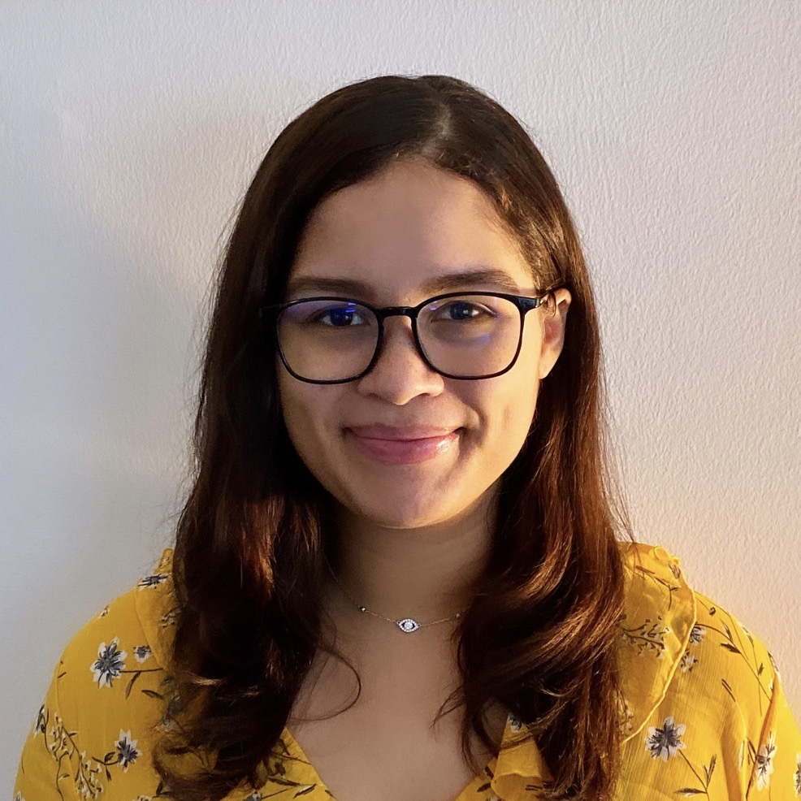

 Hello and welcome! My name is Pamela Vasquez and I am a full stack
developer in training. I am currently located in the tri-state area. I have a masters degree in
Organizational Leadership and a bachelors degree in English.
I currently work in the Learnign and Development field and am looking to expand my horizion
into the technology world in order to bring forward new intiatives into my current role. I enjoy
creating and designing which is why I have interest in the web development space. I have two dogs, a
frenchie and a toy poddle and enjoy spending time with them.
I enjoy bringing new ideas to life, if you are interested in making your big ideas come to
life you have come to the right place. I currently have a large range of experience with css and
html and can turn any plain jane page into the website of your dreams. Most of the work that I have
done has been in my current role at JP Morgan Chase. I redesigned the layout of a learning portal
and was able to code it on my own.
My favorite part about coding is the flexibility it provides you when creating a product. I also
enjoy working a lot with javascript, however I do not consider myself as knowledgable in javascript.
Over the next few month I am hoping to learn more javascript to help create a product that
can automatically feed results to users based on user data and trends. I also hope to learn how to
create an app and potentially help some of my friends with their business ideas. I am someone who
enjoys coding as a hobby and hope to make other people's lives easier with my talent.
I hope you are able to find something interesting or inspiring in my portfolio.